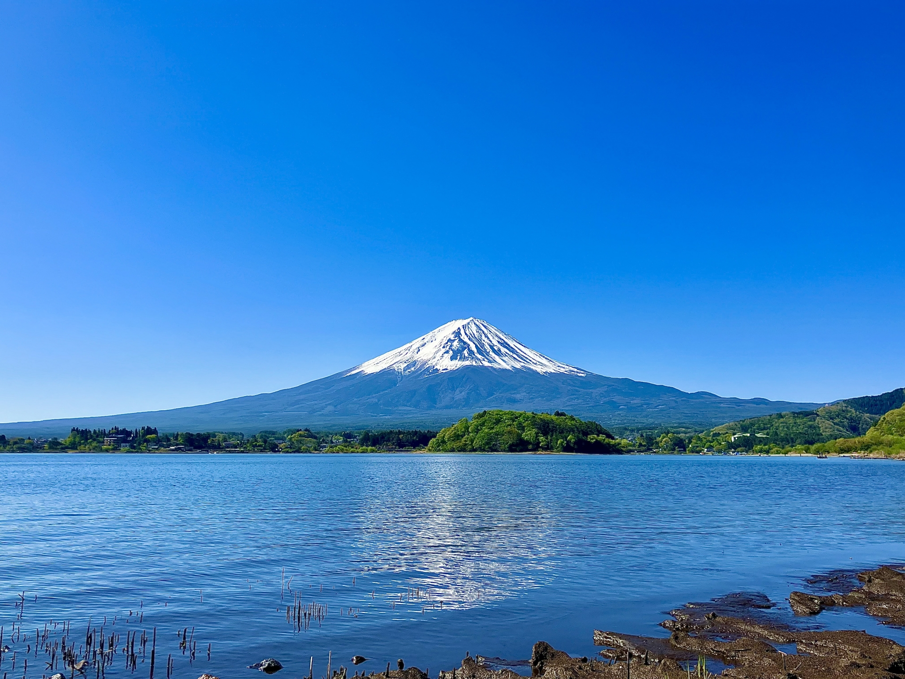

ホーム
東京スカイツリーは高さ634mの電波塔です。塔の高さだけで言えば世界一の高さになります。東京スカイツリーと名がついているので観光名所として人気です。 高い所が苦手な人でも東京スカイツリーの下にあるソラマチで、ショッピングをしたり、遊んだり、ご飯食べたり、プラネタリウムで星空まで眺めることができます！！
次は、河口湖についてです。意外と知られていないのか知られているのか分からないところですね！ここの見どころは何と言っても湖と富士山が同時に楽しめるということです！湖が大きくて圧巻ですね。 また、それだけでなくフォレストアドベンチャーなどのレジャー施設が周りにあり、大人も子供も楽しめます。湖の周りなだけあって夏でも意外と涼しいのが特徴です。 少し戻ったところに富士急ハイランドもあるので流れで遊びに行けるのも評価が高いです！！！！
次は、鎌倉についてです。鎌倉は何と言ってもスラムダンクの聖地、江ノ島電鉄の踏切が有名です。その他にもたくさんのお寺があって鎌倉の大仏が有名です。
その中でも私がオススメしたいお寺は、報国寺というお寺です。 ここは駅から少し離れてしまうのですが、とても落ち着いていて中では抹茶とお菓子を楽しむこともできます。
鎌倉と言えばしらすや、鳩サブレなどのグルメも忘れてはいけません！！！しらす丼の写真でも載せておきますね。
ここは駅から少し離れてしまうのですが、とても落ち着いていて中では抹茶とお菓子を楽しむこともできます。
鎌倉と言えばしらすや、鳩サブレなどのグルメも忘れてはいけません！！！しらす丼の写真でも載せておきますね。 駅からすぐのところに鎌倉小町通りがあるので、食べ歩きなどもオススメです！
駅からすぐのところに鎌倉小町通りがあるので、食べ歩きなどもオススメです！